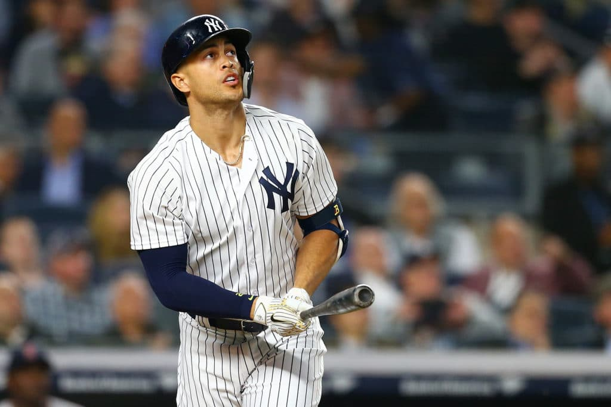

Entrenamiento de Primavera: Stanton brilla
Giancarlo Stanton conectó dos HR y Cam Schlittler dominó.
Puntos Clave:
- Stanton: HR solitario y de 2 carreras. Batea .364.
- Lagrange: Alcanzó las 102.6 MPH.

Carlos José Villanueva Ramos
Escritor Senior | The Bronx Heart
🇨🇷 Pura Vida 🇨🇷